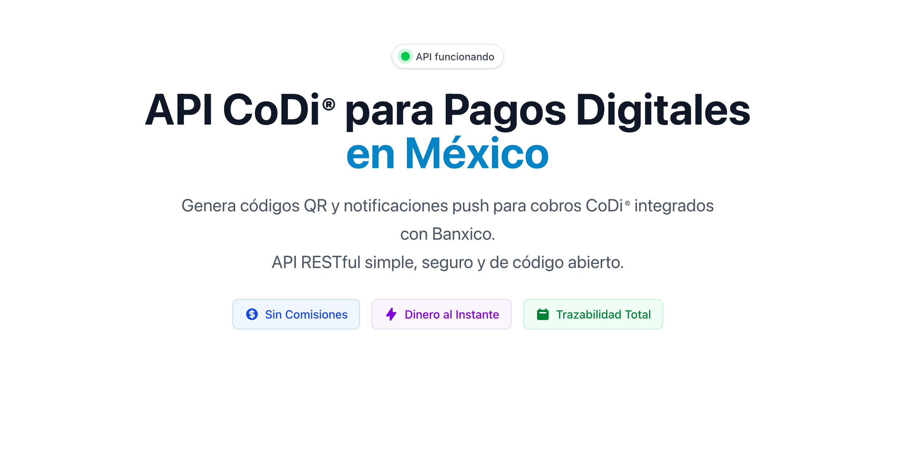
Table of Contents
In this post, I'll explain how I built a production-ready REST API that enables businesses in Mexico to accept digital payments with zero transaction fees and immediate deposits. The API integrates with the Bank of Mexico's (Banxico) official CoDi payment system and is fully open source under the Apache 2.0 license.
If you want to jump directly to the code, you can visit the GitHub repository. You can also explore the live documentation site or try the interactive API playground.
Would you like to implement CoDi for your business? Get in touch and I'll help you integrate it.
Project Overview
CoDi API is a production REST API that solves a critical problem for Mexican businesses: accepting digital payments without paying high transaction fees. Traditional payment processors charge 2-4% per transaction (plus 16% VAT), which can significantly impact profit margins, especially for small businesses.
By integrating directly with Banxico's CoDi system, this API enables businesses to accept payments from any Mexican bank account through QR codes or push notifications to mobile banking apps, with zero transaction fees.
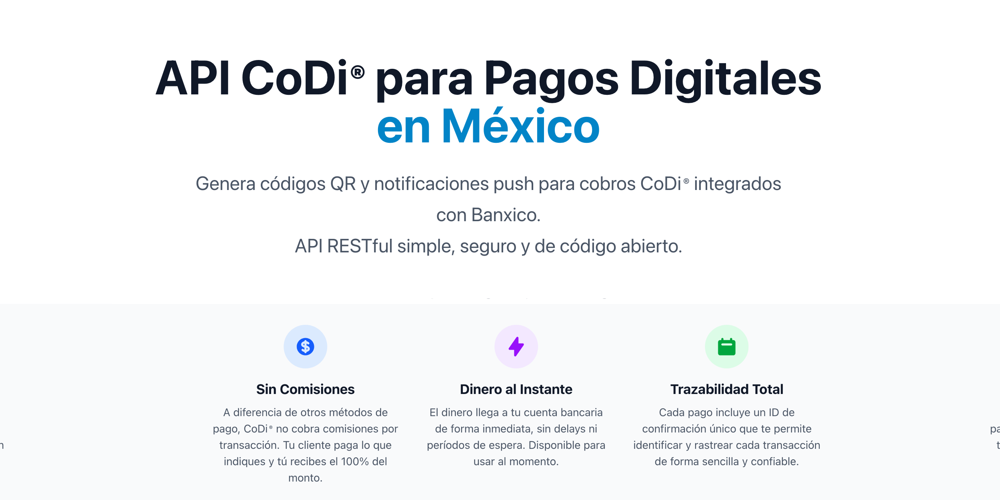
CoDi API Documentation Site - Comprehensive guides and interactive tools for developers
Key Project Highlights
- Production-Ready: Live API actively processing real payments
- Government Integration: Official Banxico CoDi system integration
- Zero Fees: No transaction commissions, ever
- Bank-Level Security: RSA digital signatures and certificate authentication
- Open Source: Apache 2.0 license, fully transparent
- Comprehensive Docs: Interactive playground, code generators, and detailed guides
- Mexican Market: Built specifically for Mexico's payment infrastructure
What is CoDi?
CoDi (Cobro Digital) is Mexico's Central Bank official digital payment system, launched in 2019 to promote financial inclusion and provide a modern alternative to cash and card payments.
How CoDi Works
Unlike traditional payment processors, CoDi operates directly through the banking system. When a customer makes a CoDi payment, the money transfers instantly from their bank account to the merchant's bank account, with no intermediaries taking a cut.
The system supports two payment methods:
- QR Code Payments: Customer scans a QR code with their banking app to authorize the payment
- Push Notifications: Payment request is sent directly to the customer's mobile banking app
Key Benefits of CoDi
- Zero Transaction Fees: No commissions charged to merchants or customers
- Instant Money Transfer: Funds available immediately
- Full Traceability: Complete audit trail of all transactions
- Bank-Level Security: Protected by the same security measures as online banking
- Universal Compatibility: Works with all Mexican banks
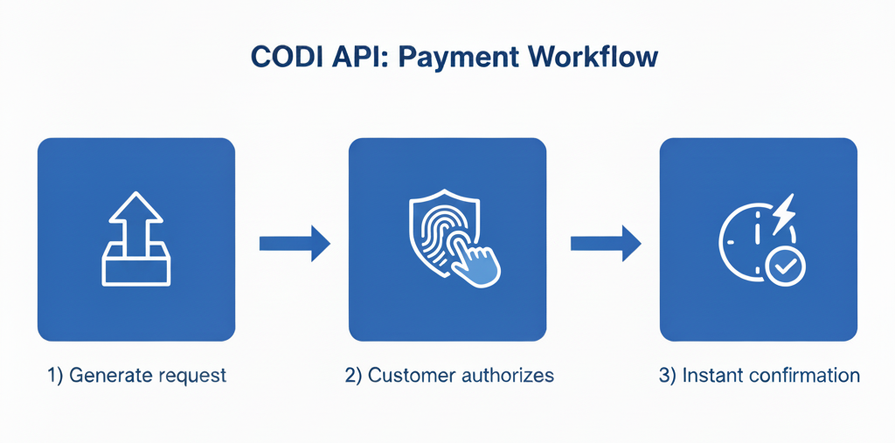
3-Step CoDi Payment Process: Generate payment request, customer authorizes, instant confirmation
Technical Architecture
The CoDi API is built as a Node.js/Express middleware layer that handles the complex authentication and communication with Banxico's payment infrastructure, exposing a simple REST API to client applications.
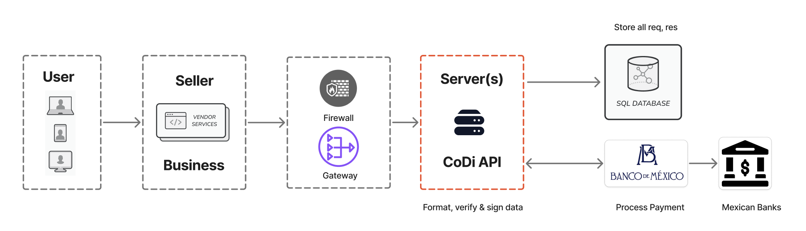
Simplified architecture overview showing the main components and data flow
Architecture Components
The system consists of several key layers:
- REST API Layer (Express.js): Handles incoming requests, validation, and responses
- Authentication Layer: Manages RSA digital signatures and certificate validation
- Banxico Integration Layer: Communicates with Banxico's CoDi endpoints
- Fallback Architecture: Multiple endpoint support with automatic retry logic
- Data Persistence (Supabase): Stores API keys, payment records, and audit logs
- Webhook System: Delivers real-time payment confirmations to client applications
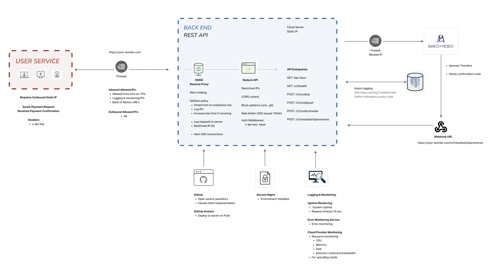
Detailed architecture diagram showing complete data flow from client application through CoDi API to Banxico
Request Flow
Here's what happens when a client application requests a payment:
- Client sends POST request with payment details (amount, description, etc.)
- API validates request and authenticates using API key
- Payment data is signed with RSA certificate
- Signed request is sent to Banxico CoDi system
- Banxico generates QR code or sends push notification
- API stores transaction record in PostgreSQL
- Response is returned to client with QR code or confirmation
- When customer pays, webhook notification is sent to client's callback URL
Key Features
The CoDi API provides six major features, each designed to make digital payment integration as simple as possible while maintaining enterprise-grade security and reliability.
1. QR Code Payment Generation
Generate CoDi-compliant QR codes that customers can scan with any Mexican banking app. The QR codes are dynamic, meaning they contain all the payment information and can expire after a specified time.
- Payment range: $1 - $12,500 MXN per transaction
- Customizable expiration (including no expiration)
- Include custom reference numbers and descriptions
- Base64-encoded QR code returned in API response
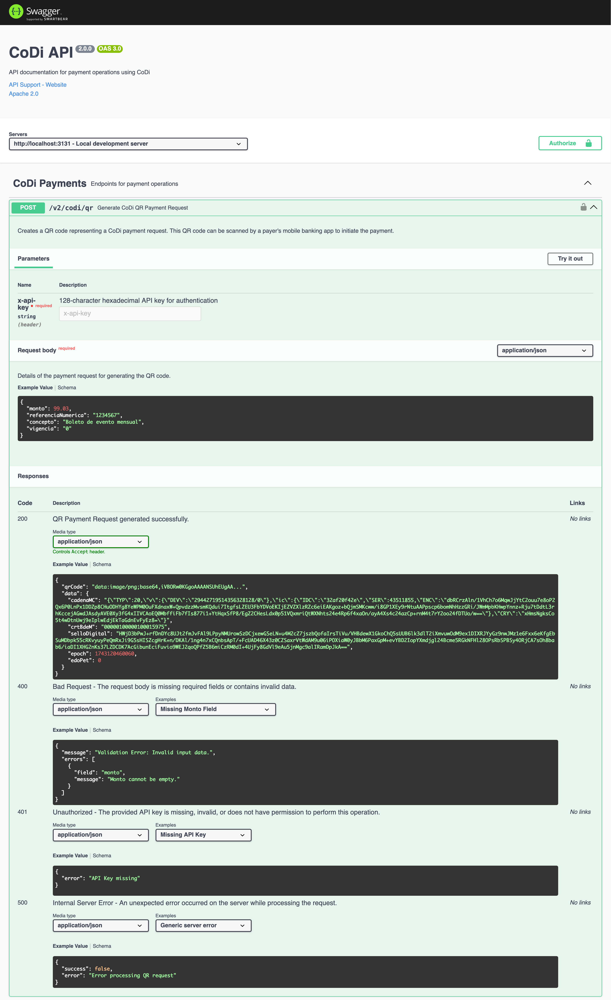
Swagger documentation for the /v2/codi/qr endpoint
2. Push Payment Notifications
Send payment requests directly to a customer's mobile banking app using their phone number. The customer receives a notification and can authorize the payment with a single tap.
- Instant delivery to customer's banking app
- No QR code scanning required
- Perfect for remote payments
- Real-time payment status updates
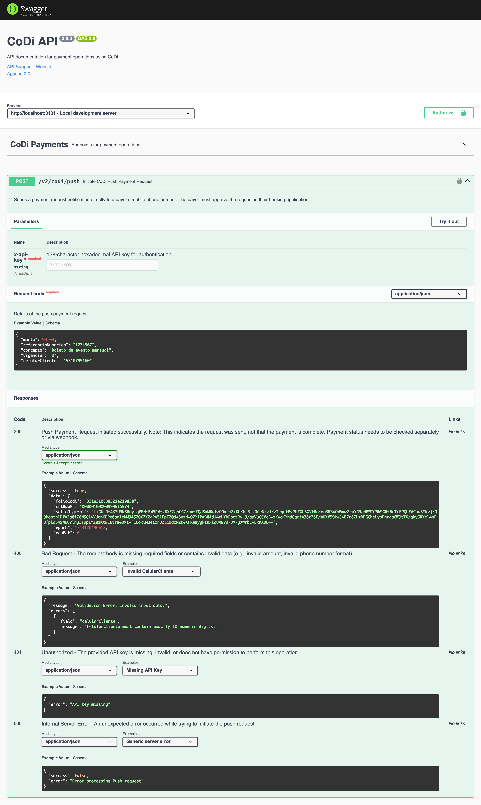
Swagger documentation for the /v2/codi/push endpoint
3. Payment Status Queries
Check the status of any payment using its unique folioCoDi reference number. This enables real-time payment verification and transaction history tracking.
- Real-time payment verification
- Transaction history lookup
- Audit trail capabilities
- Detailed payment information
4. Webhook Integration
Receive automatic notifications when payments are completed. Configure a callback URL, and the API will POST payment confirmation data to your server when a customer pays.
- Automatic payment confirmations
- Configurable callback URLs
- Secure webhook signing
- Retry logic for failed deliveries
5. Security Architecture
Enterprise-grade security features protect both the API and your payment data. Every request to Banxico is digitally signed with RSA certificates, and all communications are encrypted.
- RSA digital signatures (2048-bit minimum)
- Certificate-based authentication with Banxico
- API key management via Supabase
- Request/response logging for audit trails
- CORS protection with IP whitelisting
- Rate limiting (200 requests per 15 minutes)
- Helmet.js security headers
6. Interactive Documentation
Comprehensive documentation with interactive tools makes integration straightforward, even for developers new to payment processing.
- Swagger/OpenAPI 3.0 specification
- Try-it-out functionality for all endpoints
- Step-by-step integration guides in Spanish
- Code generators for multiple languages
- Interactive API playground
Developer Experience
A great API needs great documentation and tools. The CoDi API includes a comprehensive documentation site with interactive features that make integration faster and debugging easier.
Interactive API Playground
Test all API endpoints directly from your browser without writing any code. The playground includes pre-filled examples and validates your requests in real-time.
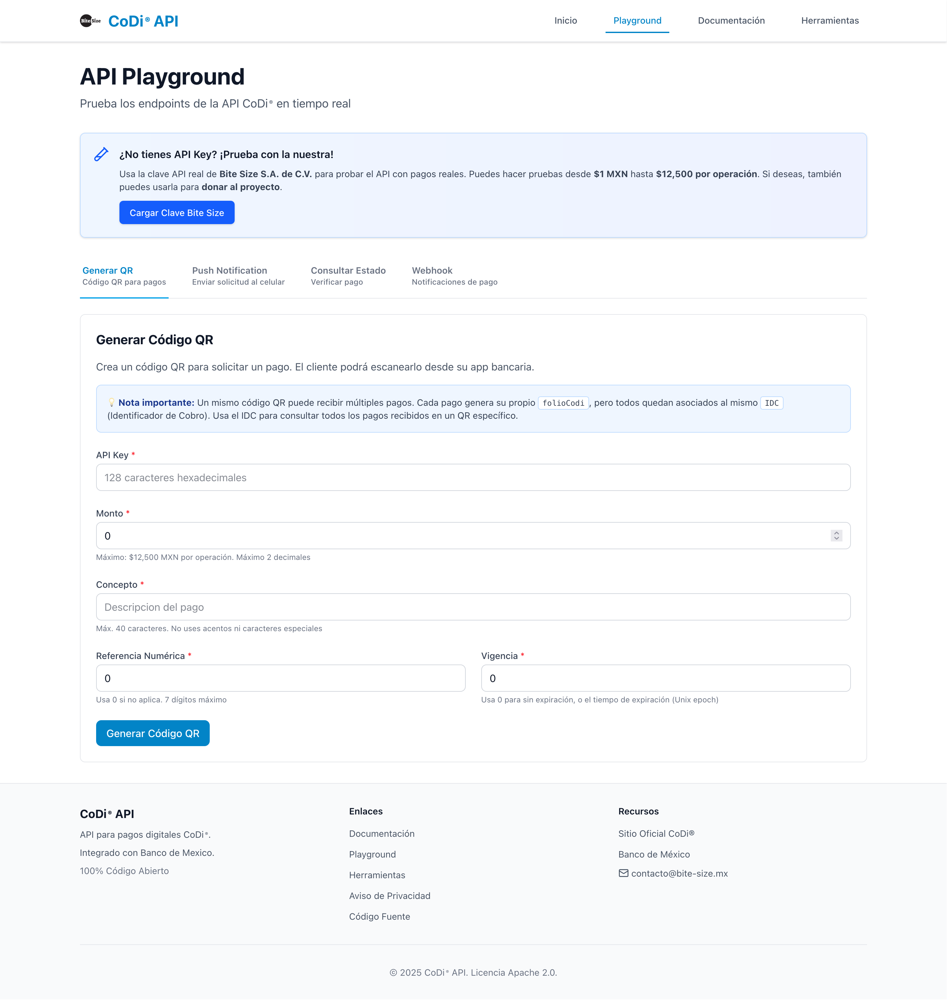
Live API playground for testing QR generation, push notifications, and payment queries
Code Generators
Generate ready-to-use integration code in multiple programming languages. Simply select your endpoint and language, and get production-ready code examples.
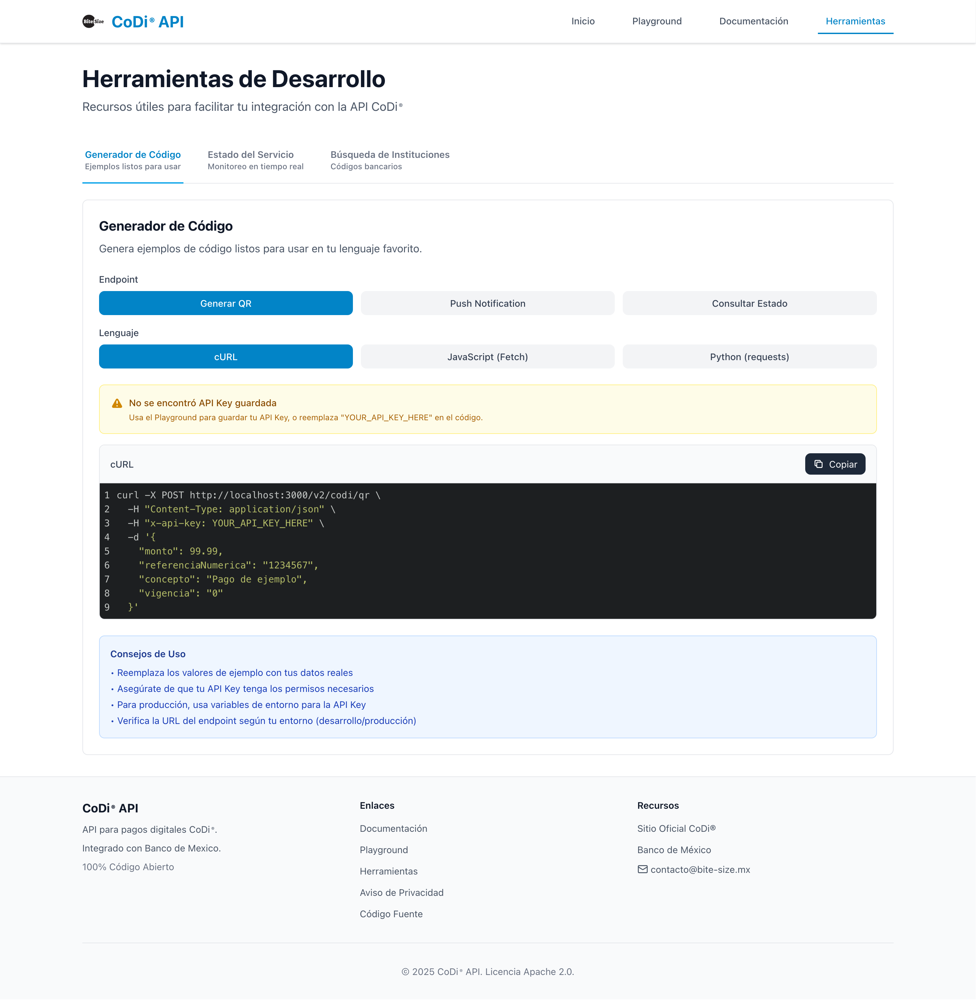
Code generator supporting cURL, JavaScript (Fetch), and Python (requests)
Additional Developer Tools
- Service Status Monitor: Real-time API availability dashboard
- Institution Code Lookup: Financial institution reference database
- Integration Guides: Step-by-step walkthroughs in Spanish
- Error Code Reference: Detailed explanations of all error responses
Tech Stack Deep Dive
The CoDi API is built with modern, tested technologies chosen for their reliability, performance, and security capabilities.
Backend Technologies
Backend Stack
// Core Technologies
Runtime: Node.js 18.x+
Framework: Express.js
Language: JavaScript (ES6+)
Database: Supabase (PostgreSQL)
Testing: Jest with coverage reporting
Process: PM2 for production
Docs: Swagger/OpenAPI 3.0
Security Stack
Security Technologies
// Security Components
Authentication: RSA certificates (2048-bit minimum)
API Keys: 128-character hexadecimal
Middleware: Helmet.js, CORS, Rate Limiting
Validation: Custom sanitization layer
Digital Signatures: All Banxico requests signed
Key Integrations
- Banxico API: Official CoDi payment system endpoints
- Supabase: Database, API key storage, request/response logging
- QR Code Generation: Dynamic payment QR codes
- Webhooks: Asynchronous payment notifications
Development & DevOps
- Version Control: Git/GitHub
- CI/CD: GitHub Actions deployment workflow
- Environment Management: dotenv for configuration
- License Compliance: Automated license checking and reporting
Database Architecture
The API uses Supabase (PostgreSQL) for data persistence, with a schema that supports multiple customers, comprehensive audit logging, and payment tracking.
Database Schema
The database consists of 5 core tables that work together to manage customers, API keys, payment transactions, and comprehensive audit logging:
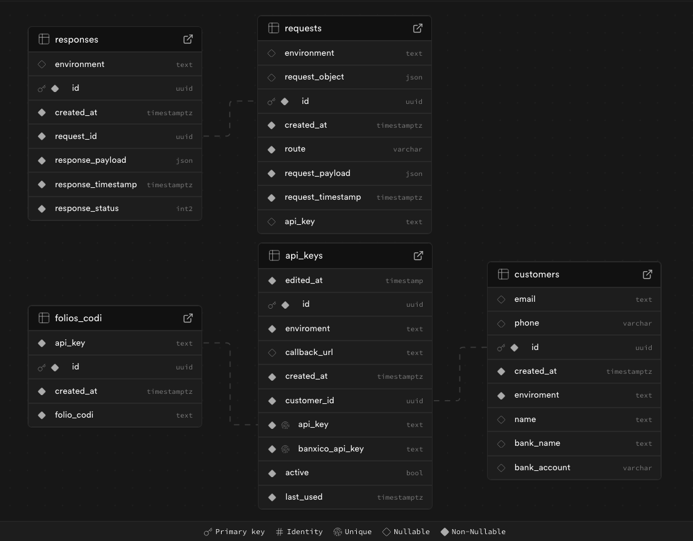
Database schema diagram showing the 5 core tables and their relationships
Data Integrity Features
- Foreign key constraints ensure referential integrity
- Timestamp columns track creation and updates
- Environment segregation prevents test/production data mixing
- Indexed queries for fast payment lookups
Security Features Deep Dive
Security is paramount when handling financial transactions. The CoDi API implements multiple layers of security to protect sensitive payment data and ensure compliance with banking regulations.
Digital Signature Authentication
Every request to Banxico is digitally signed using RSA certificates. This ensures that Banxico can verify the request originated from an authorized CoDi API instance and hasn't been tampered with.
JavaScript - Digital Signature Generation
// Example of RSA signature generation
const crypto = require('crypto');
const fs = require('fs');
function generateDigitalSignature(payload, privateKeyPath) {
// Load RSA private key
const privateKey = fs.readFileSync(privateKeyPath, 'utf8');
// Create signature using SHA256 with RSA
const sign = crypto.createSign('SHA256');
sign.update(JSON.stringify(payload));
sign.end();
// Generate signature in base64 format
const signature = sign.sign(privateKey, 'base64');
return signature;
}
Certificate Validation
The API validates RSA certificates by comparing serial numbers and verifying certificate authenticity before accepting any requests. This prevents unauthorized access even if someone obtains a valid API key.
IP Whitelisting & Access Control
The system implements strict IP whitelisting across three security layers to ensure only authorized clients can access the payment infrastructure:
- Firewall Layer: Network-level IP filtering blocks unauthorized traffic before it reaches the application
- API Layer: Application-level IP validation ensures only registered client IPs can make API requests
- Bank Layer: Banxico requires pre-registered IP addresses for all CoDi system connections, providing an additional security checkpoint
This multi-layered IP restriction architecture ensures that even with valid credentials, access is only possible from approved network locations, significantly reducing the attack surface.
API Key Management
API keys are 128-character hexadecimal strings stored securely in Supabase. Each key is linked to a specific customer and environment (Beta or Production), with individual rate limits and permissions.
Request Sanitization
All incoming requests are sanitized to prevent SQL injection, XSS attacks, and other common vulnerabilities. Input validation ensures only properly formatted data reaches the Banxico integration layer.
Rate Limiting
The API implements rate limiting to prevent abuse and ensure fair resource allocation. The default limit is 200 requests per 15-minute window per API key.
Security Headers
Helmet.js adds security headers to all responses, protecting against common web vulnerabilities like clickjacking, XSS, and content type sniffing.
API Endpoints Reference
The CoDi API exposes 5 main endpoints for managing digital
payments. All endpoints require API key authentication via the
x-api-key header.
Endpoint Overview
| Endpoint | Method | Purpose |
|---|---|---|
/v2/health |
GET | System health check and status |
/v2/codi/qr |
POST | Generate QR code payment request |
/v2/codi/push |
POST | Send push notification payment request |
/v2/codi/consulta |
POST | Query payment status by folioCoDi |
/v2/resultadoOperaciones |
POST | Webhook endpoint for payment callbacks |
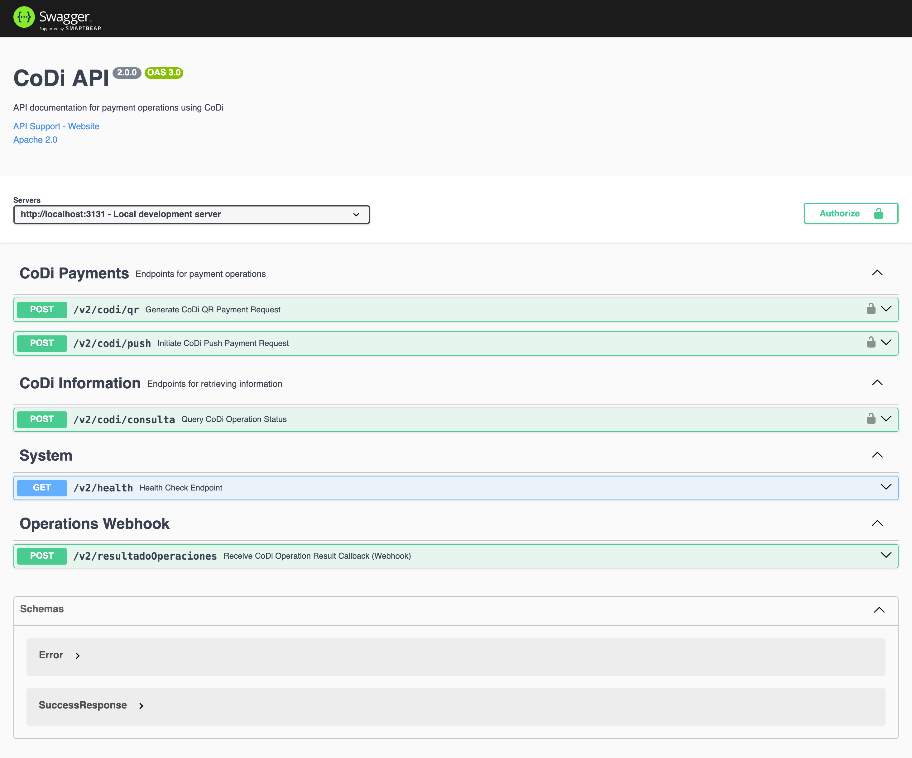
Complete Swagger documentation showing all API endpoints organized by category
Use Cases
The CoDi API is versatile and can be integrated into a wide variety of business applications. Here are the most common use cases:
1. E-commerce Platforms
Online stores can integrate CoDi as a payment option at checkout, offering customers a commission-free alternative to credit cards.
- Shopping cart integration
- Order confirmation workflows
- Automatic inventory updates on payment
- Email receipts and invoices
2. Point of Sale Systems
Physical retail locations can use CoDi for in-person payments, displaying QR codes at the counter or sending push notifications.
- Retail checkout counters
- Service desks and kiosks
- Mobile POS terminals
- Restaurant payment systems
3. Service Providers
Service-based businesses can request payments remotely via push notifications, perfect for recurring billing or on-demand services.
- Utility payments and bills
- Subscription services
- Professional services (consultants, freelancers)
- Maintenance and repair services
4. Marketplaces
Multi-vendor platforms can use CoDi to handle peer-to-peer transactions between buyers and sellers.
- Peer-to-peer transaction platforms
- Classified ads and listings
- Freelance marketplaces
- Commission-based platforms
Would you like to implement CoDi for your business? Get in touch and I'll help you integrate it.
Open Source & Community
The CoDi API is open source under the Apache 2.0 license, which means you can use it commercially, modify it, distribute it, and even patent it, with minimal restrictions.
Apache 2.0 License Benefits
- Commercial Use: Use the API in commercial products without fees
- Modification: Customize the code to fit your specific needs
- Distribution: Distribute modified or unmodified versions
- Patent Grant: Protection from patent lawsuits
- No Warranty: Provided "as is" without liability
Contributing to the Project
Contributions are welcome! Whether you're fixing bugs, adding features, improving documentation, or reporting issues, your help makes the project better for everyone.
How to Contribute
- Fork the repository on GitHub
-
Create a feature branch (
git checkout -b feature/new-feature) -
Commit your changes (
git commit -m 'Add new feature') -
Push to the branch (
git push origin feature/new-feature) - Open a Pull Request
Community Resources
- GitHub Issues: Report bugs and request features
- GitHub Discussions: Ask questions and share ideas
- Documentation: Comprehensive guides and API reference
- Code Examples: Real-world integration examples
Project Links & Resources
Live Services
- API Endpoint - Production API base URL
- Documentation Site - Comprehensive guides and tutorials
- API Playground - Interactive testing environment
- Swagger Documentation - Complete API reference
Code & Community
- GitHub Repository - Source code and README
- Issues - Bug reports and feature requests
- Discussions - Community questions and ideas
External Resources
- Banxico CoDi Official - Bank of Mexico CoDi information
Get in touch!
I'm currently open to work and I'd be happy to chat.
Feel free to reach out if you are interested in what I can bring
to your project or team.